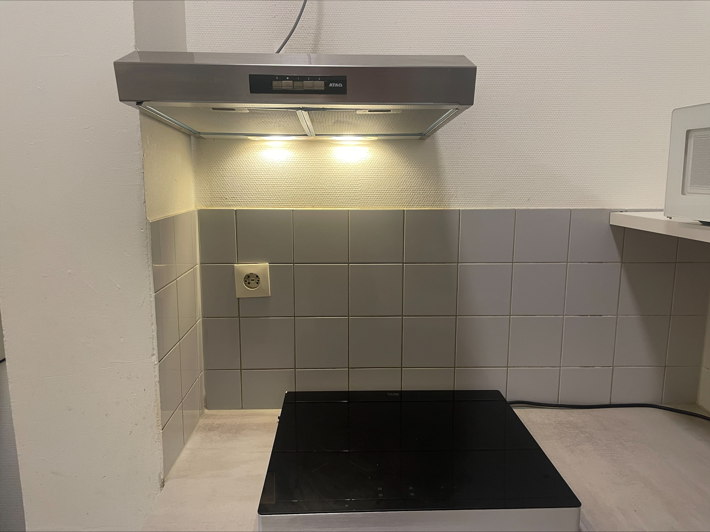

The kitchen can be a hazardous place if you’re not careful. One of the worst mistakes is leaving the stove unattended, especially with flammable items like cloths or towels nearby, they can ignite quickly if they get too close to heat. Never leave a pan full of grease unattended, as it can lead to dangerous grease fires that are hard to control. Also, don't drop hot liquids or food on wooden floors, this not only creates a mess but can also cause serious injuries.
Always prioritize safety in the kitchen. Keep flammable materials away from the stove, and never leave cooking unattended. If you’re cooking something that requires oil, keep a close eye on it, especially as it heats up. In the event of a grease fire, remember that water is not your friend; instead, cover the pan with a lid or use a fire extinguisher designed for grease fires. Maintain a clean cooking environment wipe up any spills promptly, and be mindful of how you handle hot pans or liquids to avoid accidents. By staying vigilant and prepared, you can keep your kitchen safe and your cooking enjoyable.